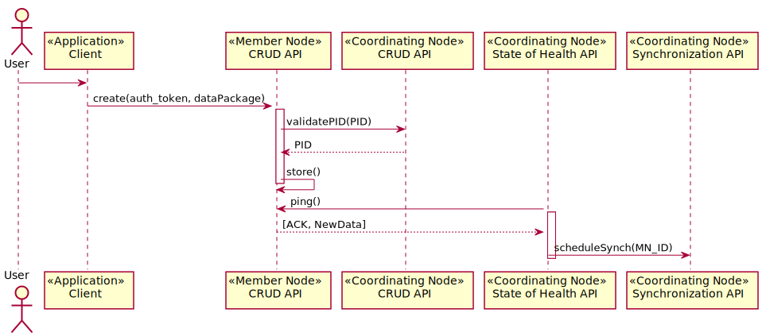

Use Case 04 - Create New Object¶
- Revisions
View document revision history.
- Goal
Create new content on a Member Node.
- Summary
A user adds new content to a Member Node (MN). The operation of adding new content to a Member Node is atomic to the Member Node, meaning there is no dependency on the replication or synchronization processes for the successful completion of a create operation.
The metadata is retrieved by the CN using a pull mechanism (CN requests content from the MN) which may be triggered by a timer event or notification from the MN.
The availability of new content on a MN is indicated by a flag in the response to a ping() message issued by a CN. The CN then retrieves a list of changes from the MN and for each change, retrieves the experiment metadata, stores it and generates a search metadata document by extracting content from the experiment metadata. The changes to the CN (stored experiment metadata, update search metadata) are replicated to the other CNs (Use Case ###). The CN schedules replication of the data package across other MNs (Use Case 06).
- Actors
Member Node, additional Member Nodes, Coordinating Nodes
- Preconditions
Use is authenticated and so client application has an auth_token for the process.
DataONE system operational
MN is registered and is monitored
- Triggers
New data package is present on Member Node
An existing data package is modified on a Member Node
A data package is deleted from a Member Node
- Post Conditions
New data package is replicated across MNs
Search metadata is updated
Operation recorded in logs
CN update of search metadata
CN replication of metadata
Watchers notified of change
Figure 1. Use case 04.
Figure 2. Create, update, delete, science metadata or data object in Member Node.
Notes
Are IDs are pegged to versions? If so, update might differ more radically from create.
If delete is a metadata operation only, then will be very similar to update. But if it is a physical operation, it becomes more complex. Will there be an archival copy? Will member nodes that hold replicas be “forced” to destroy the replicas?
Is submit from a member node a push or pull?
Should queuing of a submission within a member node be required for success? (We assume yes, to guarantee replication of submissions).
Can data packages be deleted or modified?